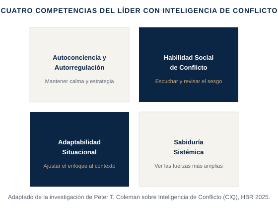

Un desacuerdo que sigues evitando no desaparece — solo se mueve bajo tierra, donde te cuesta más. Esto trata de desarrollar la habilidad de abordar el conflicto de forma deliberada, en vez de evitarlo o dejar que escale.
Un desacuerdo entre dos personas de tu equipo que empieza a afectar a todos; una relación con un cliente que se ha tensado tras un compromiso incumplido; un debate en el comité que es más sobre ego que sobre la decisión real.
El profesor de Columbia e investigador en resolución de conflictos Peter T. Coleman, en un artículo de Harvard Business Review, sostiene que a medida que crece la fricción en el trabajo, los líderes necesitan una habilidad específica que llama inteligencia de conflicto (CIQ): la capacidad de leer la dinámica real de un conflicto — no solo a las dos personas discutiendo, sino las fuerzas situacionales y sistémicas que lo alimentan — y responder de forma deliberada en lugar de evitar la incomodidad o dejar que escale. A partir de esta investigación, construí un modelo práctico de formación en torno a cuatro competencias centrales: autoconciencia y autorregulación (mantenerse estratégico en vez de reactivo), habilidad social de conflicto (escuchar en profundidad y revisar tu propio sesgo antes de asumir el del otro), adaptabilidad situacional (ajustar tu enfoque al contexto y a las personas que tienes delante, no a un guion fijo) y sabiduría sistémica (ver las fuerzas más amplias y de largo plazo en las que se inserta el conflicto). Los líderes que desarrollan CIQ no eliminan el conflicto — lo convierten en una de las fuentes más fiables de confianza e innovación de un equipo, en lugar de en lo que todos evitan en silencio.

Adaptado por Mauro Delgado de la investigación de Peter T. Coleman sobre Inteligencia de Conflicto (CIQ), Harvard Business Review, 2025.
Qué desescala de verdad un conflicto → las cuatro competencias del líder con inteligencia de conflicto, aplicadas a una situación real.
Vídeo extendido (15-25 min), un PDF framework/checklist propio, un workbook de aplicación práctica, y un resumen curado de la investigación de Peter T. Coleman sobre inteligencia de conflicto y la Guía HBR para Gestionar el Conflicto en el Trabajo de Amy Gallo.
Gratuito si eres cliente de coaching activo · El acceso por suscripción para el público general se abrirá próximamente.